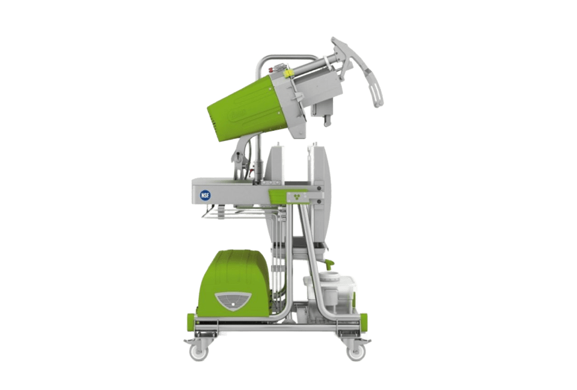
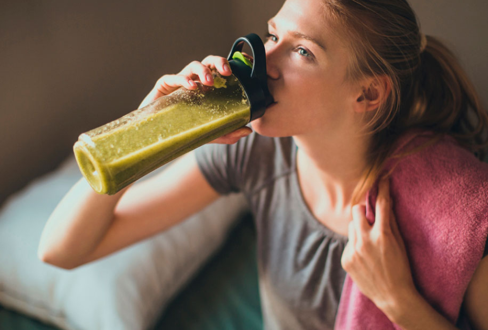
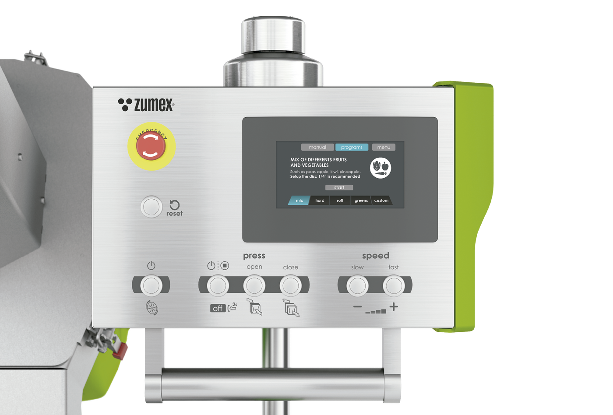
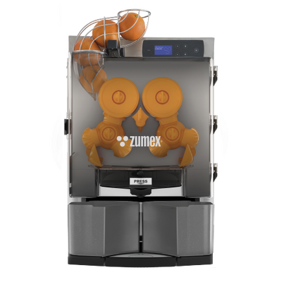

Mastery
Profesionální technologie lisování za studena pro výrobce šťáv a juice bary. Mastery zpracovává širokou paletu surovin a dává prostor vlastním recepturám.
Cenu a dostupnost vám potvrdíme podle konfigurace.
Co Mastery umí
Mastery je lis pro výrobu šťáv za studena z ovoce a zeleniny. Hodí se pro samostatné výrobní projekty i rozšíření nabídky juice baru, pokud potřebujete mít pod kontrolou receptury a průběh lisování.
Nastavitelný tlak a rychlost umožňují přizpůsobit proces surovině. Kompaktní robustní konstrukce spojuje kroky potřebné pro cold-press výrobu; sestavu je vhodné navrhnout společně s přípravou surovin, skladováním a plněním.
Lisování ovocných i zeleninových směsí.
Pro malosériovou profesionální výrobu.
Výsledný výkon závisí na receptuře a vstupní surovině.


Co Mastery zpracuje
Mastery lisuje ovoce i zeleninu za studena a zachovává jejich vlastnosti. Programy jsou připravené pro:
 Tvrdé ovoce (jablka)
Tvrdé ovoce (jablka) Měkké, šťavnaté ovoceMrkev
Měkké, šťavnaté ovoceMrkev Červená řepaListová zelenina
Červená řepaListová zeleninaProgramy: měkké ovoce, tvrdé ovoce, listová zelenina, mix a vlastní nastavení.
Varianty a provedení
Jedna řada, vaše konfigurace. Fotografie jsou ilustrační, výbava a parametry se mohou lišit podle varianty.
Mastery
Kapacitu ověříme podle receptur a konkrétní konfigurace. U tohoto modelu je důležité posuzovat celý pracovní cyklus, ne pouze rychlost samotného lisování.
Rozměry
Kolik místa Mastery potřebuje.
- Výška1 700 mm
- Šířka735 mm
- Hloubka940 mm
- Hmotnost303 kg
Údaje výrobce. Přesné rozměry pro vaši konfiguraci rádi ověříme.
Technické parametry
- Technologie
- Cold Press, lisování za studena
- Suroviny
- Ovoce a zelenina
- Regulace
- Nastavitelný tlak a rychlost
- Konstrukce
- Kompaktní průmyslové provedení
- Elektrický příkon
- 2,25 kW
- Hmotnost
- 303 kg
- Lisovací síla
- 11 t
- Výkon
- Až 110 l/h (podle suroviny)
- Nádoba na šťávu
- 11 l
- Materiál lisu
- Nerez AISI 304 a AISI 316
- Motor
- Bezkartáčový
- Ovládání
- Dotykový barevný displej 4,3"
- Režimy
- Manuální / poloautomatický
- Bezpečnost
- Bezpečnostní senzory, ochrana proti přetížení, nouzové tlačítko
- Certifikace
- NSF
- Rozměry (š × h × v)
- 735 × 940 × 1 700 mm
Údaje výrobce pro uvedené provedení. Výkon závisí na surovině a konfiguraci. Zdroj: Zumex
Co zvážit při výběru
Kapacitu ověříme podle receptur a konkrétní konfigurace. U tohoto modelu je důležité posuzovat celý pracovní cyklus, ne pouze rychlost samotného lisování.
Technologie a výbava
Co uvnitř dělá rozdíl v chuti, hygieně i obsluze.
Lisování za studena
Celý proces lisování bez oxidace šťávy.
Nastavitelný tlak a rychlost
Řízení drcení, lisování a cyklů v reálném čase.
Výbava v ceně
2 lisovací desky, 3 lisovací vaky (jemný, střední, hrubý), 3 strouhací disky, nádoba s filtrem, čisticí sada.
Dokumentace ke stažení
Prospekty, technické listy a návody výrobce.
Podobné produkty

Soul Series 2
Soul Series 2 přináší automatické lisování citrusů i na bar, kde je každý centimetr důležitý.
- Výkon M/S18 plodů/min
- Výkon XS36 limetek/min

Minex
Minex je automatický pomerančový lis pro provozy s mírnější spotřebou: malé kavárny, pekárny i hotelové snídaně.
- Výkon13 pomerančů/min
- Zásobník6–7 plodů

Essential
Essential je řada pro každodenní přípravu čerstvé citrusové šťávy v gastronomii.
- Parametry proEssential Pro
- Výkon22 plodů/min

Versatile
Versatile spojuje automatické podávání citrusů s větší autonomií než ručně doplňované stolní lisy.
- Výkon Basic / Pro22 plodů/min
- Zásobník Pro16 kg
Chcete Mastery do svého provozu?
Pošlete nám, kolik šťávy denně připravujete a kolik máte místa. Ozveme se s doporučenou konfigurací a cenou.